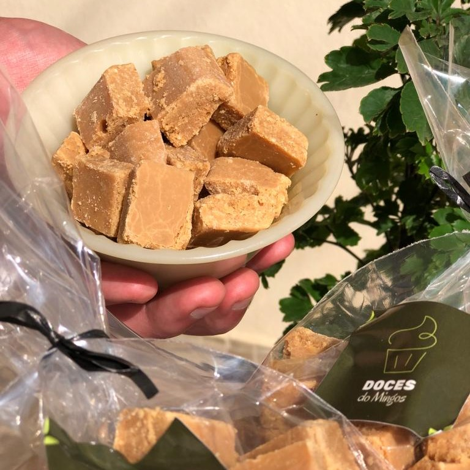
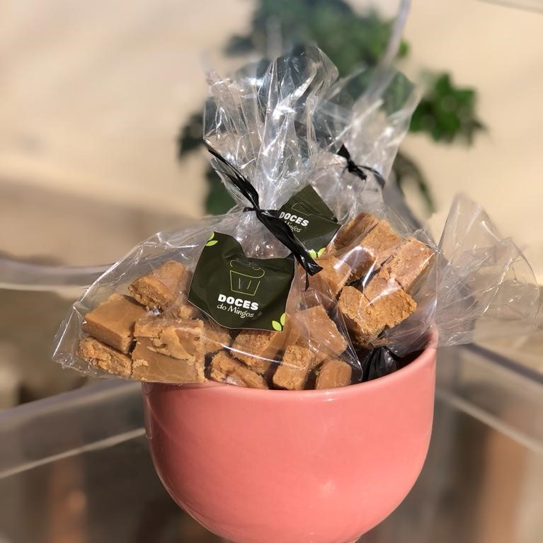

OS DOCES

de CocoIdeal para servir como sobremesa, e até mesmo para acompanhar aquele cafézinho, com seu sabor típico dos produtos feitos artesanalmente. |

de LeiteNosso Doce de Leite é puro e extremamente cremoso. Produzido com matéria-prima selecionada e um cuidado especial no processo. |

de AmendoimDelícia mesmo é comer nosso sabor favorito, o Doce de Amendoim. É, sem dúvida, capaz de agradar até mesmo os paladares mais exigentes. |